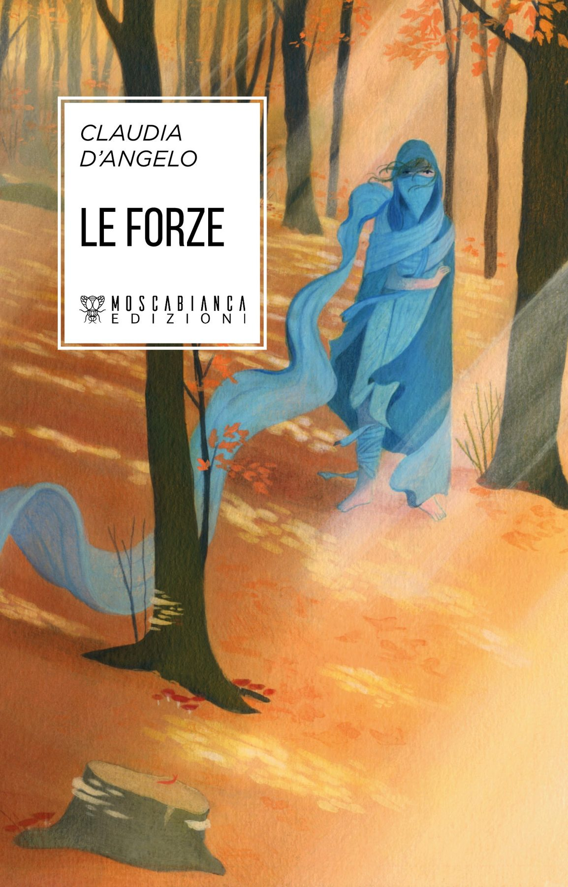
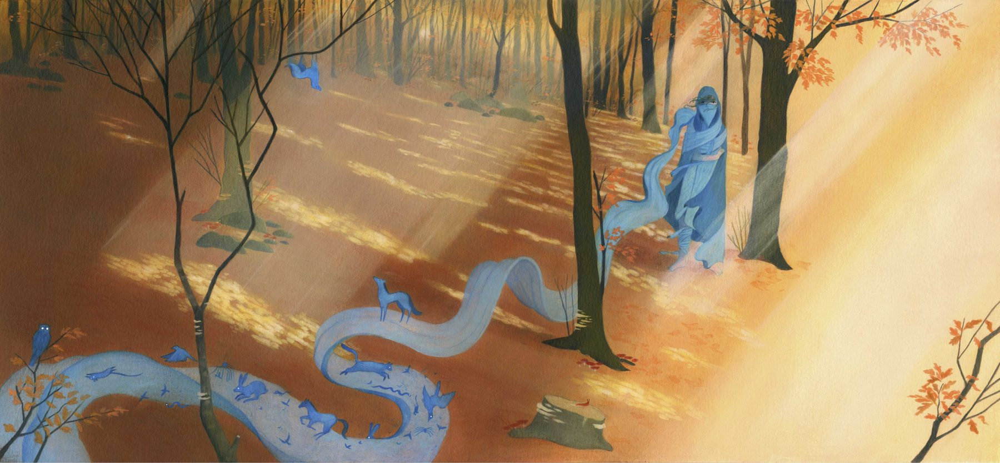
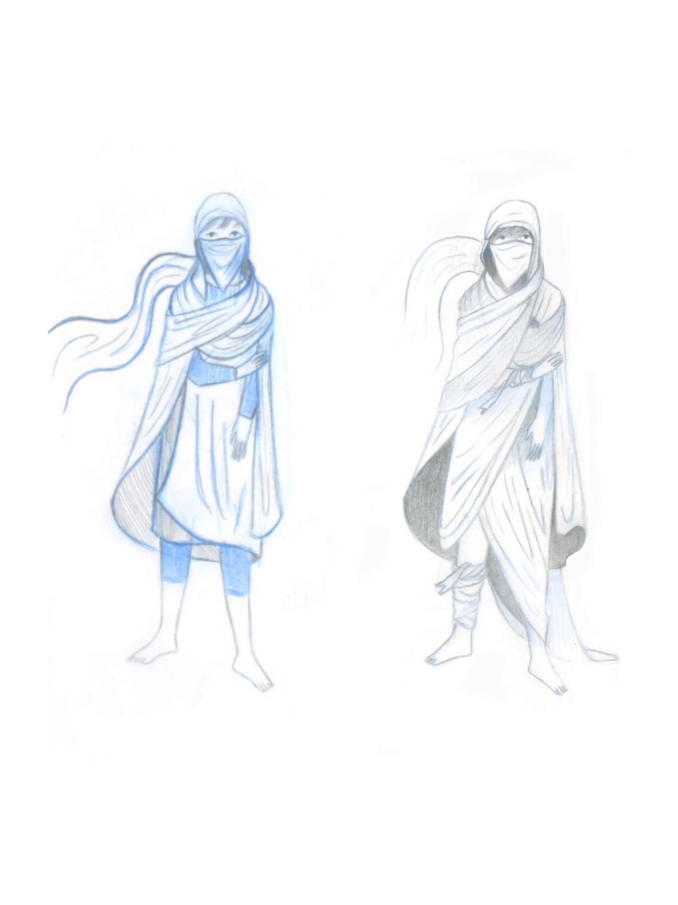
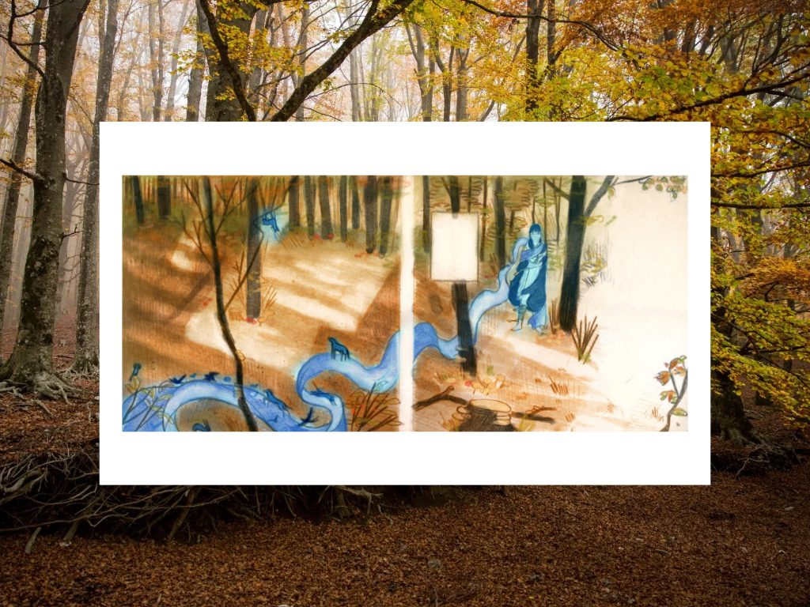

Andrea Di Martino torna a casa dopo una lunga degenza, e il palazzo in cui vive l’accoglie silenziosamente. Andrea non esce e non parla, tiene il viso avvolto tra scialli e stoffe e si aggira tra le stanze buie. Di tutti i condomini solo Lucia si interessa alla ragazza e, come una madre, si prende cura di lei e la invita a dare sfogo ai suoi pensieri su un quaderno condiviso, in cui Andrea riversa la propria rabbia. Ma non basterà. Misteriose forze si stanno insinuando nell’edificio, e nei racconti che intervallano le vicende del condominio scopriamo quali altri strati di realtà e quali mondi vorticano come polvere intorno alla storia di Andrea, tra boschi, chiese e feste di paese.



